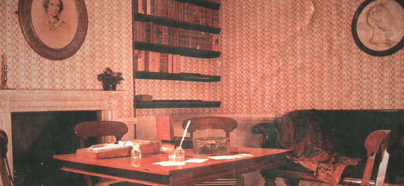
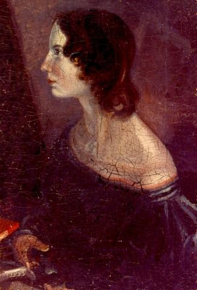

Emily Jane Brontë (30 July 1818 – 19 December 1848) was an English novelist and poet, best remembered for her solitary novel, Wuthering Heights, now considered a classic of English literature. Emily was the third eldest of the four surviving Brontë siblings, between the youngest Anne and her brother Branwell. She published under the pen name Ellis Bell.
Emily Brontë was born on 30 July 1818 in Thornton, near Bradford in Yorkshire, to Maria Branwell and Patrick Brontë. She was the younger sister of Charlotte Brontë and the fifth of six children. In 1824, the family moved to Haworth, where Emily's father was perpetual curate, and it was in these surroundings that their literary gifts flourished.
Early life and education
After the death of their mother in 1821, when Emily was three years old, the older sisters Maria, Elizabeth and Charlotte were sent to the Clergy Daughters' School at Cowan Bridge, where they encountered abuse and privations later described by Charlotte in Jane Eyre. Emily joined the school for a brief period. When a typhus epidemic swept the school, Maria and Elizabeth caught it. Maria, who may actually have had tuberculosis, was sent home, where she died. Emily was subsequently removed from the school along with Charlotte and Elizabeth. Elizabeth died soon after their return home. The three remaining sisters and their brother Patrick Branwell were thereafter educated at home by their father and aunt Elizabeth Branwell, their mother's sister. In their leisure time the children created a number of fantasy worlds, which were featured in stories they wrote and enacted about the imaginary adventures of their toy soldiers along with the Duke of Wellington and his sons, Charles and Arthur Wellesley. Little of Emily's work from this period survives, except for poems spoken by characters (The Brontës' Web of Childhood, Fannie Ratchford, 1941). When Emily was 13, she and Anne withdrew from participation in the Angria story and began a new one about Gondal, a large island in the North Pacific. With the exception of Emily's Gondal poems and Anne's lists of Gondal's characters and place-names, their writings on Gondal were not preserved. Some "diary papers" of Emily's have survived in which she describes current events in Gondal, some of which were written, others enacted with Anne. One dates from 1841, when Emily was twenty-three: another from 1845, when she was twenty-seven. At seventeen, Emily attended the Roe Head girls' school, where Charlotte was a teacher, but managed to stay only three months before being overcome by extreme homesickness. She returned home and Anne took her place.[6] At this time, the girls' objective was to obtain sufficient education to open a small school of their own.
Adulthood
Emily became a teacher at Law Hill School in Halifax beginning in September 1838, when she was twenty. Her health broke under the stress of the 17-hour work day and she returned home in April 1839. Thereafter she became the stay-at-home daughter, doing most of the cooking and cleaning and teaching Sunday school. She taught herself German out of books and practised piano. In 1842, Emily accompanied Charlotte to Brussels, Belgium, where they attended a girls' academy run by Constantin Heger. They planned to perfect their French and German in anticipation of opening their school. Nine of Emily's French essays survive from this period. The sisters returned home upon the death of their aunt. They did try to open a school at their home, but were unable to attract students to the remote area. In 1844, Emily began going through all the poems she had written, recopying them neatly into two notebooks. One was labelled "Gondal Poems"; the other was unlabelled. Scholars such as Fannie Ratchford and Derek Roper have attempted to piece together a Gondal storyline and chronology from these poems. In the autumn of 1845, Charlotte discovered the notebooks and insisted that the poems be published. Emily, furious at the invasion of her privacy, at first refused, but relented when Anne brought out her own manuscripts and revealed she had been writing poems in secret as well. In 1846, the sisters' poems were published in one volume as Poems by Currer, Ellis, and Acton Bell. The Brontë sisters had adopted pseudonyms for publication: Charlotte was Currer Bell, Emily was Ellis Bell and Anne was Acton Bell. Charlotte wrote in the "Biographical Notice of Ellis and Acton Bell" that their "ambiguous choice" was "dictated by a sort of conscientious scruple at assuming Christian names positively masculine, while we did not like to declare ourselves women, because... we had a vague impression that authoresses are liable to be looked on with prejudice." Charlotte contributed 20 poems, and Emily and Anne each contributed 21. Although the sisters were told several months after publication that only two copies had sold, they were not discouraged. The Athenaeum reviewer praised Ellis Bell's work for its music and power, and the Critic reviewer recognized "the presence of more genius than it was supposed this utilitarian age had devoted to the loftier exercises of the intellect."

Wuthering Heights
In 1847, Emily published her novel, Wuthering Heights, as two volumes of a three-volume set (the last volume being Agnes Grey by her sister Anne). Its innovative structure somewhat puzzled critics. Although it received mixed reviews when it first came out, and was often condemned for its portrayal of amoral passion, the book subsequently became an English literary classic. In 1850, Charlotte edited and published Wuthering Heights as a stand-alone novel and under Emily's real name. Although a letter from her publisher indicates that Emily was finalizing a second novel, the manuscript has never been found.
Death
Emily's health, like her sisters', had been weakened by unsanitary conditions at home, the source of water being contaminated by runoff from the church's graveyard.[10] She became sick during her brother's funeral in September 1848. Though her condition worsened steadily, she rejected medical help and all proffered remedies, saying that she would have "no poisoning doctor" near her. She eventually died of tuberculosis, on 19 December 1848 at around two in the afternoon. She was interred in the Church of St. Michael and All Angels family vault, Haworth, West Yorkshire. ■